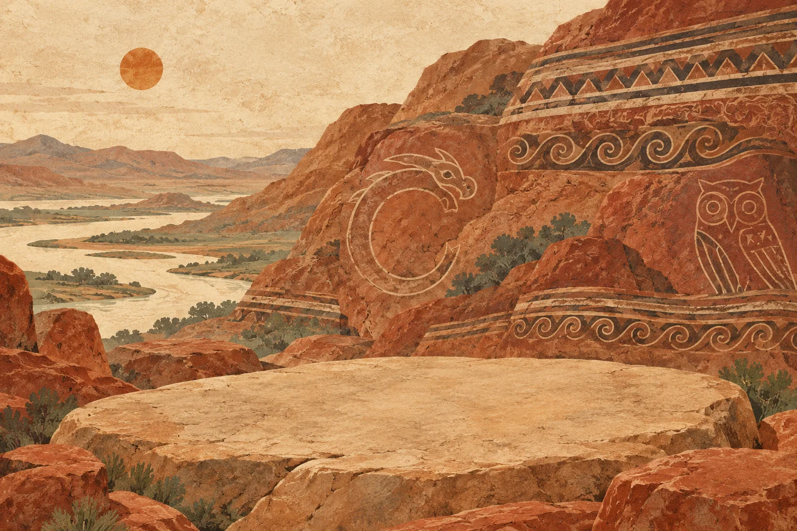

赭红，是大地的颜色。
取意红山的赭红山体，用陶土、岩石与细砂的色彩，铺开一场相遇。
风掠过红色的山，纹样留在陶土间。
循着古老的器形，从一方原石开始，
用自己的双手，让玉慢慢显形。

选一件喜欢的器物，走进你的玉作工坊。
不设时限，可以示范，也可以一步步撤回。
取意红山的赭红山体，用陶土、岩石与细砂的色彩，铺开一场相遇。
从红山彩陶的平行线、三角纹与之字纹提取节奏，让古老纹样走进界面。
观察轮廓，描绘纹路。把一眼看见的器物，变成一件亲手完成的作品。
磨去石皮，循着器形，让温润一点点显现。